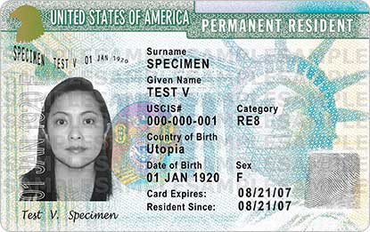
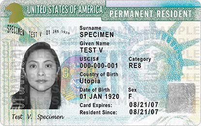

College Rights
1)Students in California can attend college paying, in state tuition. (Dream Act)
2) Immigrants have the benefit to the same scholarships and financial aid for public colleges as any other citizen. (Dream Act)
3) No immigrant child can be rejected from public education (The Supreme Court)
Deportation
1) If you report a crime, that you were a victim of or witness, you will not be deported. (DHS)
2)If a police asks about your immigration status, you have the right to politely decline and not answer.
3)You cannot be arrested for refusing to answer a police’s question. (5th amendment of the U.S)
Getting a Green Card
1) Receiving help from the government like health care, benefits, food supply help, or programs that do not give you cash will not affect your chances of receiving a green card.
2)You are eligible for a green card if: You have a U.S citizen relative, your job skills are needed in the U.S, or if your county has the least immigrants in the U.S.
3) If you have committed a high level felony it's almost impossible for you to receive a green card.However, if you have a low level felony you can still apply for a green card.
 
